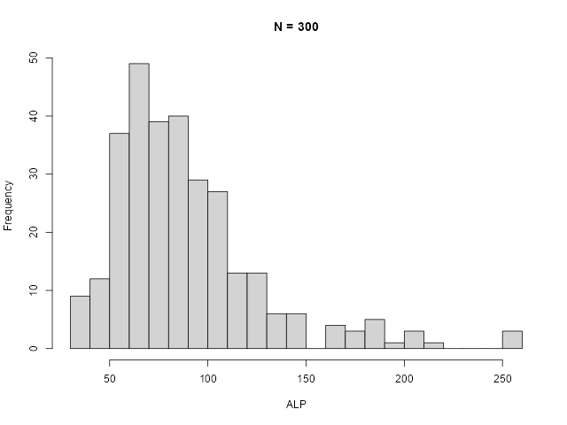
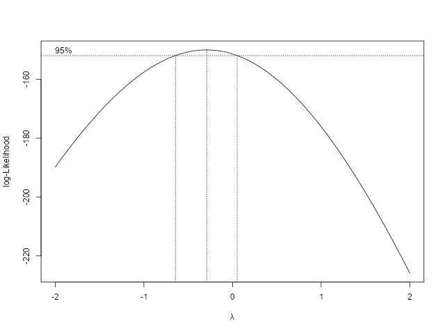
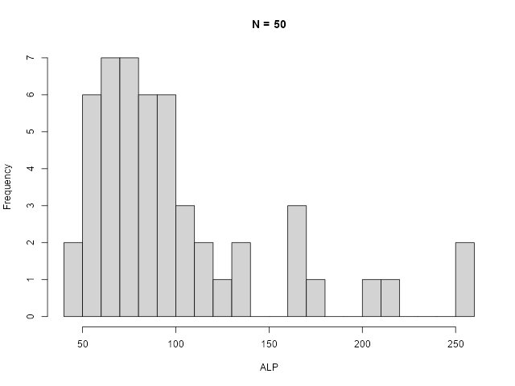

Purpose: The ME Tools add-in provides specialized statistical procedures for the verification and validation of clinical laboratory methods. It focuses on essential calculations such as linear regression and variance component analysis that are not natively available in standard Excel functions.
This tools has been designed for laboratory professionals to be used with the accompanying method verification workbook.
User Guide
Getting Started
Accessing the Tools
Search for the add-in from the Add-ins menu item on the Home tab and select Add.

Once the add-in is loaded, a new "ME Tools" group will appear in the Home tab of the Excel ribbon.
-
Launch Taskpane: Click the "Basic Tools" button to toggle the taskpane.
-
Navigation: Use the taskpane menu to select specific analytical modules
Range Input Fields
All modules in this tool require the user to enter the range of cells within the worksheet that contain the data to be analyzed or for reporting results. You may enter the range manually using the same notation found in Excel formulas: for example, C10 for a single cell or C5:C10 for a range of cells. Both relative (C10) and absolute ($C$10) addressing are supported.
Alternatively, the cells can be highlighted directly in the worksheet. Click the Range Copy button adjacent to the associated field to automatically fill it with the selected cell range. The range will be entered as an absolute address that includes the worksheet name (e.g., Sheet1!$C$5:$C$10).
Analytical Performance Specifications (APS)
Before analysis, define your performance criteria (e.g., based on biological variation, clinical requirements, or other criteria). The APS are assumed to be total allowable error (TEa) specifications.
The specifications can be entered directly into the taskpane or imported from the Excel worksheet.
-
APS Absolute: Enter the reference to the Excel cell containing the value, or the raw values.
-
APS Relative: Enter the reference to the Excel cell containg the decimal fraction, or raw the decimal fraction (e.g. 0.1 for 10%).
Method Comparison and Regression
The Regression tool supports three primary models to evaluate how a test method compares to a reference.
Regression Type |
Use Case |
Confidence Intervals |
Deming |
Accounts for errors in both the x and y variables; assumes constant variance. |
Default = Jackknife; Alternative = Bootstrap. |
Weighted Deming |
Accounts for errors in both the x and y variables; assumes constant coefficient of variation (CV). |
Default = Jackknife; Alternative = Bootstrap. |
Passing-Bablok |
A non-parametric model; does not assume a specific error distribution. |
Default = Non-parametric; Alternative = Bootstrap. |
Execution Steps
-
Select Data: Highlight your reference method (X) and test method (Y) ranges. If using duplicates, reference data must occupy two columns.
-
Define Output: Specify the top left cell for displaying the results.
-
Regression Method: Select the regression method. Default is Passing-Bablok.
-
Confidence Interval Method: Select the method for calculating confidence intervals.
-
Difference Plot Type: Default displays a relative difference plot.
-
Define Chart Range: Specify a range over which the Bland-Altman and Scatter plots should be displayed.
-
Run: Click "Run" to generate statistical summaries and charts.
If Deming or Weighted Deming regression is selected, an estimate of the ratio of the variances of the two methods must be provided. If measurements have been made in duplicate, this can be estimated from the replicate measurements. If not, an estimate can be based on prior knowledge, literature values, or an assumption that both methods have similar variance having a ratio of 1.0.
|
Tip
|
If using the Method Verification Workbook, click "Load Defaults" to automatically populate required cell ranges. |
Concordance
Concordance can be assessed in one of two ways. If quantitative results are reported, diagnostic concordance is assessed by setting diagnostic thresholds for each method. The thresholds are used to define result categories for each method, which can then be used to calculate Cohen’s Kappa statistic.
The number of diagostic thresholds for the two methods must be the same although the thresholds themselves may be different for the two methods. For example a reference assay may be regarded as reactive if a result is ≥ 50; not reactive if a result is < 25 and equivocal for values between 25 and 50. Where as the assay being compared may have thresholds of 32 and 64 respectively for the same diagnostic outcome.
Again, it is necessary to select the top left cell in the worksheet where the contingency table and associated statistics will be reported.
For qualitative or ordinal results, use the module for Qualitative Comparisons. Qualitative data must be listed in two columns and use the same labels.
| Method A | Method B |
|---|---|
Positive |
Positive |
Positive |
Equivocal |
Positive |
Negative |
Equivocal |
Positive |
Equivocal |
Equivocal |
Equivocal |
Negative |
Negative |
Positive |
Negative |
Negative |
Imprecision Analysis
Imprecision is assessed using the procedures described in CLSI EP05 and CLSI EP15, with a one way or two way ANOVA. It assumes samples have been analysed in replicate in one or more runs per day over a number of days.
Data must be in "long format" (one column per level) with specific columns for Day and Run.
An example of the recommended layout is shown in the table below where triplicate measurements have been made in each run with two runs per day over two days. Verification studies will generally only involve a single run each day. Results for each level must be in continguous columns.
| Day | Run | Level 1 | Level 2 |
|---|---|---|---|
Day 1 |
Run 1 |
1.2 |
11.3 |
Day 1 |
Run 1 |
1.1 |
12.2 |
Day 1 |
Run 1 |
1.1 |
11.3 |
Day 1 |
Run 2 |
1.3 |
11.9 |
Day 1 |
Run 2 |
1.2 |
11.3 |
Day 1 |
Run 2 |
1.3 |
12.2 |
Day 2 |
Run 1 |
1.4 |
12.1 |
Day 2 |
Run 1 |
1.3 |
12.0 |
Day 2 |
Run 1 |
1.3 |
11.5 |
Day 2 |
Run 2 |
1.5 |
11.8 |
Day 2 |
Run 2 |
1.2 |
12.3 |
Day 2 |
Run 2 |
1.2 |
10.4 |
Execution Steps
-
Define Days: Enter the cell range containing the days over which the samples were analysed.
-
Define Runs: Enter the cell range containing the runs. Note if there is only a single run per day, this can be omitted.
-
Define Results: Enter the cell range contaning the results for each level and then click on the select icon for that field to copy the address to the form.
-
Check for outliers: Grubb’s test is used to detect a single outlier in univariate data that follows an approximately normal distribution. Other tests are recommended if you suspect more than one outlier may be present. If outliers are found in any of the results columns these will be displayed in an alert box. The background color of the specific cells will also be set to yellow. If an outlier is found it should be removed prior to running the analysis. It is recommended that the days data is excluded for that level and precision is assessed again for another day.
-
Run: Click the "Run" button to perform the analysis of imprecision.
|
Important
|
For a verification study involving performing k replicates over i days, balanced data is preferred but the statistical procedures will tolerate small imbalances. That is, days with less than the full complement of replicates. In contrast, for a nested design with k replicates in each of j runs over i days, the data must be balanced to calculate the pooled degrees of freedom from an ANOVA. If the the data is unbalanced, more sophisticated techniques are required to conduct a variance component analysis. Unbalanced data will cause the Add-in to report an error. |
Imprecision Layout
This module generates a template for an imprecision study that meets the formatting requirements of this addin. It is useful where precision is assessed over more than one day or in multiple runs.
The default layout is the standard 5 replicates over 5 days used for assessing imprecision as outlined in CLSI EP15.

Alternative layouts can be created by specifying the number of days, runs, and replicates; selecting the top left cell (Layout Range) for the layout to be written; and then clicking on "Setup".

In the process of writing the layout to the worksheet, the cell ranges used for specifying the days, runs, and values are copied to the Precision Analysis section of the taskpane.

Additional Utilities
The clinical laboratory method evaluation Excel add-in comes with a couple of utilities that are provided in the hope that they will be helpful for users.
However, there are risks and limitations associated with their use that users need to be aware of in order to avoid misuse or misinterpretation.
Reference Intervals
The reference interval tool enables the user to calculate a reference interval on population data using either the robust or non-parametric methods.
The robust method uses Horn’s biweight quantile approach. It is useful for smaller data sets and is resistent to outliers. However, the data needs to be distributed symmetrically. For populations with a skewed distribution the data can be transformed prior to analysis. Alternatively, data below the median can be removed, and data above the median can be reflected where the reflected value v = median - (x - median), for each value x above the median. Suppose the median is 100 and subsequent values for x are [105, 124, 135, …]. The reflected values would be [95, 76, 65, …]. The combined data set can then be used as a symmetric pseudo-sample to calculate the upper reference limit. Horn suggests using the non-parametric approach to define the lower reference limit of the reference interval.
Horn PS, Pesce AJ, Copeland BE. A robust approach to reference interval estimation and evaluation. Clinical Chemistry. 1998. 44(3):622-631.
The non-parametric approach requires at least 120 individuals in order to estimate 90% confidence limits for lower and upper reference limits of the reference interval. This works well for normally distributed data but with skewed data the uncertainty about the upper reference limit can become quite large. Therefore, it is recommended that much larger data sets are used if data is heavily skewed.
A Box-Cox transformation of the data can be undertaken to normalise skewed data prior to analysis with the robust approach. However, the selection of lambda, discussed below, can be problematic if the data set is not large enough. For this reason it is suggested that the robust approach only be used on smaller data sets, say 50 - 200 subjects if the data is symmetrically distributed.
The simplest approach to assessing the distribution is to construct a histogram of the data. Excel has a built in histogram chart tool which is available under the Insert menu.
Skewness can also be assess using the Excel SKEW function.
A custom function METOOLS.SHAPIROWILKW(x) that calculates the Shapiro-Wilk W and returns this value with the level of significance is available when the taskpane is active. A p value < 0.05 indicates the data is unlikely to follow a normal distribution.

Execution Steps
-
Define Data: The reference interval data should be in a single column in Excel. Enter the cell range containing the data.
-
Select Method: Select the method for calculating the reference interval.
-
Define Reference Interval Quantiles: The default is for reference interval to include 95% of the population (alpha = 0.05).
-
Define the Confidence Interval Quantiles: The default is for 90% confidence limits (alpha = 0.10).
-
Define Output Range: Enter the top left cell of the cell range where results of analysis are to be reported.
-
Run: Click "Calculate" button to run the analysis and report results.
Confidence Limits for Reference Intervals
Confidence limits for the reference limits are calculated using the method of Campbell and Gardiner rather than using the tabulated values in CLSI EP28-A3c.
Campbell MJ, Gardner MJ. Calculating confidence intervals for some non-parametric analyses. Br Med J (Clin Res Ed). 1988 May 21;296(6634):1454-6. doi: 10.1136/bmj.296.6634.1454. PMID: 3132290;
CLSI EP28-A3c 2010: Defining, Establishing, and Verifying ReferenceIntervals in the Clinical Laboratory, 3rd Edition.
The tabulated values reproduced below are based on Reed AH, Henry RJ, Mason WB. Influence of statistical method used on the resulting estimate of normal range. Clin Chem. 1971 Apr;17(4):275-84. PMID: 5552364
From CLSI EP28-A3c
Sample Size |
Lower |
Upper |
Sample Size |
Lower |
Upper |
119-132 |
1 |
7 |
566-574 |
8 |
22 |
133-160 |
1 |
8 |
575-598 |
9 |
2 |
161-187 |
1 |
9 |
599-624 |
9 |
3 |
188-189 |
2 |
9 |
625-631 |
10 |
3 |
190-218 |
2 |
10 |
632-665 |
10 |
4 |
219-248 |
2 |
11 |
666-674 |
10 |
5 |
249-249 |
2 |
12 |
675-698 |
11 |
5 |
250-279 |
3 |
12 |
699-724 |
11 |
6 |
280-307 |
3 |
13 |
725-732 |
12 |
6 |
308-309 |
4 |
13 |
733-765 |
12 |
7 |
310-340 |
4 |
14 |
766-773 |
12 |
8 |
341-363 |
4 |
15 |
774-799 |
13 |
8 |
364-372 |
5 |
15 |
800-822 |
13 |
9 |
373-403 |
5 |
16 |
823-833 |
14 |
9 |
404-417 |
5 |
17 |
834-867 |
14 |
0 |
418-435 |
6 |
17 |
868-871 |
14 |
1 |
436-468 |
6 |
18 |
872-901 |
15 |
1 |
469-470 |
6 |
19 |
902-919 |
15 |
2 |
471-500 |
7 |
19 |
920-935 |
16 |
2 |
501-522 |
7 |
20 |
936-967 |
16 |
3 |
523-533 |
8 |
20 |
968-970 |
17 |
3 |
534-565 |
8 |
21 |
971-100 |
17 |
4 |
To obatain the corresponding rank numbers for the 0.975 quantile, subtract the rank numbers in the table from n+1, where n is the sample size.
In contrast to the indices provided above, Campbell and Gardner calculate the rank indices using the following equations.
\$r'=nq-(N_{1-\alpha/2} \times \sqrt{nq(1-q)})\$
\$s'=1+nq+(N_{1-\alpha/2} \times \sqrt{nq(1-q)})\$
where:
r' is the index of the lower confidence limit rounded to an integer.
s' is the index of the upper confidence limit rounded to an integer.
n is the sample size.
q is the reference interval quantile, usually 0.025 or 0.975.
alpha is the significance level of the confidence interval, typically 0.1 for 90%.
N is the inverse of the normal cumulative density function, which in Excel can be
calculated with the function NORM.INV(1-alpha/2, 0, 1).
Consider the sample size band 161-187 in the above table where the indices for the lower confidence limit are 1 and 9. For a sample size of 161, the upper confidence limit indices are there for 161+1-9 = 153, and 161+1-1 = 161. In contrast, for the sample size of 187, the upper confidence limit indices are 187+1-9=179 and 187+1-1=187.
As might be expected, by defining sample size bands, the ranks using the CLSI approach follow a step wise profile as illustrated below. Stepping also occurs with the Cambell and Gardner approach due to rounding to integers but it is less apparent than with the CLSI approach.
N |
CLSI LRL LCI Rank |
CLSI LRL UCI Rank |
CLSI URL LCI Rank |
CLSI URL UCI Rank |
C&G LRL LCI Rank |
C&G LRL UCI Rank |
C&G URL LCI Rank |
C&G URL UCI Rank |
119 |
1 |
7 |
113 |
119 |
0 |
7 |
113 |
120 |
132 |
1 |
7 |
126 |
132 |
0 |
7 |
126 |
133 |
133 |
1 |
8 |
126 |
133 |
0 |
7 |
127 |
134 |
160 |
1 |
8 |
153 |
160 |
1 |
8 |
153 |
160 |
161 |
1 |
9 |
153 |
161 |
1 |
8 |
154 |
161 |
187 |
1 |
9 |
179 |
187 |
1 |
9 |
179 |
187 |
188 |
2 |
9 |
180 |
187 |
1 |
9 |
180 |
188 |
189 |
2 |
9 |
181 |
188 |
1 |
9 |
181 |
189 |
The and edge case occurs for sample sizes 119 to 133, where the Campbell and Gardner equations round to ranks outside N, in these circumstances if the calculated rank is < 1 then rank is set to 1, and if rank > N, then rank is set to N, which aligns with the CLSI table.
Box-Cox Transformation
The Box Cox power transformation is often suggested for transforming reference interval data having a skewed distribution to one having a normal distribution. Reference interval tools can then be applied to the transformed data to derive a reference interval and the reference limits back calculated using the inverse of the transformation.
The Box-Cox transformation is given by:
\$y={(\frac{x^{\lambda} - 1}{\lambda}, \lambda \ne 0),( ln(x), \lambda = 0):}\$
This tool provides a couple of methods for estimating lambda using a simple grid search. In both cases a search space must be defined by setting the start of the range, the end of the range, and the step size. The tool performs a Box-Cox transform on the population data and assesses the goodness of fit using a Shapiro- Wilk test or a log likelihood function for every possible lambda in the search space. The lambda having the best Shapiro-Wilk W or maximum likelihood is then selected.
The algorithm is not guaranteed to determine the optimal value of lambda but should return something close for data that is typically used to define reference intervals. If the returned value of lambda is at the start or end of the search space you selected, you will need to extend the search space and try again.
The uncertainty in the estimated value for lambda can be very large if the sample is small. The charts of lambda versus the log likelihood below have been generated in R (version 4.5.2) using the boxcox algorithm in the MASS package (version 7.3-65).
It is clear that as the sample size gets smaller, the 95% confidence interval for the value of lambda becomes very wide. For this reason it is suggested that samples used to estimate a value for lambda should contain at least 200 subjects but more may be required depending on the degree of skewness.

Figure 8. Histogram N = 20000
|

Figure 9. Estimated lambda = -0.5
|

Figure 10. Histogram N = 300
|

Figure 11. Estimated lambda = -0.28
|

Figure 12. Histogram N = 100
|

Figure 13. Estimated lambda = -0.29
|

Figure 14. Histogram N = 50
|

Figure 15. Estimated lambda = -0.72
|

Figure 16. Histogram N = 30
|

Figure 17. Estimated lambda = 0.16
|

Execution Steps
-
Define Data: As for the reference interval tool, the data should be in a single column. Enter the cell range containing the data.
-
Defint Output Range: Enter the top left cell of the range where you would like the transformed data to be reported.
-
Select Method: Choose the method for assessing the best lambda value. The default is a Shapiro-Wilk test.
-
Define Search Space: Enter the start, end, and step size of the search space. The default is -2 to +2 in steps of 0.01.
-
Run: Click on the Transform button to run the analysis.
To back calculate the reference limits and confidence intervals from the transformed data, use the METOOLS.BOXCOXINV(x, lambda) custom function in Excel. This function is available when the add-in taskpane is active.

Errors and Warnings
Error: You cannot perform the requested operation
This error message usually arises if the add-in is attempting to write to a write protected cell or series of cells. The easiest way of avoiding this is to unprotect the sheet. Protection can be reapplied once the add-in operation has been completed.
Alternatively, if you are preparing a template, the cells that the add-in will write to can be unlocked in advanced. First, highlight the relevant cells in Excel and right click to display the context menu.
Choose the "Format Cells" item, which will display the Format Cells dialog.

Select the Protection tab and then uncheck the Locked option. Select OK to save the changes. The worksheet protection may then be applied in the usual way and the add-in will still be able to write to the cells.
Note, however, that charts can only be created and displayed by the add-in if the active worksheet is unprotected.
Developers and Contributors
During development and testing, the add-in should be "side-loaded". This can be involved. Side-loading from behind corporate firewalls adds an extra level of complexity.
Office add-ins are developed using standard web technologies such as HTML, CSS, and Javascript. Excel runs these as a web page within Excel. To side-load an application it must be run using nodejs, which is a powerful tool that allows javascript to be run outside a web browser.
Side-loading the add-in
Node.js must be installed on your computer. Rather than installing a particular version of Node.js directly, installing via a node version manager is recommended.
-
Download nvm-setup.exe for windows from https://github.com/coreybutler/nvm-windows/releases
-
Install nvm-setup.exe
-
Open a command prompt and run the following commands (update the version number as needed). Note, lts is an abbreviation for long-term-support.
nvm install lts nvm use 24.6.0
-
If you are familiar with Git, clone the repository
git clone https://github.com/dche658/method-eval-tools.git
-
Alternatively, download the add-in repository from https://github.com/dche658/method-eval-tools
-
You can do this by clicking the green "Code" button and selecting "Download ZIP".
-
Extract the contents of the ZIP file to a directory on your computer.
-
-
Navigate to the directory where you extracted the downloaded repository and run:
npm install
This will take quite some time to complete as all the libraries used in development must be downloaded and installed, and there are a lot of them!
-
Finally, execute the add-in with:
npm run start
A separate terminal window will open, after which Excel will be launched. Startup can take a few minutes to complete.
When you have finished using Excel and the add-in, do not just close the terminal window. You must execute the stop command so the cache is cleared. Otherwise, problems can arise when you try to run the add-in again.
npm run stop
Option: Install on a Portable Device
If you do not have administrator access then you can install the add-in on a portable device. A high speed external solid state drive will likely give you the best results.
Instructions for installing nodejs as a portable application have been taken from here.
-
Install Cmder in your desired location on the portable drive.
-
Download nvm-noinstall.zip from the latest release.
-
Extract the contents of nvm-noinstall.zip into the bin folder inside of the portable Cmder folder.
-
Navigate to the bin folder in Cmder and run install.cmd
-
When asked to enter the absolute path use your Cmder bin folder.
-
Install the version of node you want eg. nvm install latest (Make sure to still be inside of the bin folder in your terminal program).
-
Wait until node and npm have finished installing.
-
Inside the bin folder there should be a folder containing the latest node version e.g. v24.6.0 at the time of writing.
-
Copy the absolute path to that folder. e.g. E:\PortableApps\CmderPortable\bin\v24.6.0.
-
Add this to your existing path in Cmder’s environment settings. This can be done in a couple of ways. The first is by running the following command.
set "PATH=E:\PortableApps\CmderPortable\bin\v24.6.0;%PATH%"
-
Alternatively edit the user profile e.g. E:\PortableApps\CmderPortable\config\user_profile.cmd and add a line e.g. 'set "PATH=%CMDER_ROOT%\bin\v24.6.0;%PATH%"'
-
Make sure you are still inside your bin folder. Run nvm use v24.6.0 or your chosen node version. You can close the username and password window both times without entering anything. It should tell you Now using node v24.6.0 (64-bit).
-
Close and open Cmder and you should have access to node, npm and npx
-
If you are behind a corporate firewall you will probably need to set the proxy configuration. Suggestions on how to do this a shown below.
-
Download and extract the add-in repository as described above.
-
Then run the following commands to install the add-in and then side-load it into Excel.
npm install npm run start
If you have an Excel workbook on OneDrive you can copy a link to the document and use the following command to side-load the add-in into Excel.
npm run start -- web --document https://1drv.ms/x/c/7ba37898bfb7e549/EdiktLds9p5MvIFWYzL0-QBSw?e=5BUXE7
Option: Set a proxy for npm
Find the proxy settings for your network by opening Settings. Go to Network and Internet, and then Proxy.
If a manual proxy has been configured, you can copy those details. If a script has been used, this is often located at https://your.domain/proxy.pac. You can generally see the content of the proxy.pac file by copying the url to you web browser and use your browser to display the file. Inspect the content of the file to find the appropriate proxy server url and port for your subnet (often the default).
Run the following commands to set the proxy and https proxy.
npm config set proxy http://<username>:<password>@<proxy-server-url>:<port> npm config set https-proxy http://<username>:<password>@<proxy-server-url>:<port>
Run the following command to confirm the npm settings
npm config list
In many cases if you run 'npm install' at this point you will get an untrusted certificate error. This often occurs because your organisation uses its own Certificate Authority. To get around this you will need to either get root certificate from your IT department, export it from your web browser, or run the "Manage computer certificates" settings app and export it from there in pem format.
Configure cafile with the command
npm config set cafile /path/to/your/corporate/root/certificate.pem
The alternative approach is to temporarily Bypass SSL Validation. This method disables strict SSL validation and is generally not recommended for long-term use due to security implications.
npm config set strict-ssl false npm config set registry="http://registry.npmjs.org/"
Appendices
License
MIT License Copyright (c) 2025 Douglas Chesher
Permission is hereby granted, free of charge, to any person obtaining a copy of this software and associated documentation files (the "Software"), to deal in the Software without restriction, including without limitation the rights to use, copy, modify, merge, publish, distribute, sublicense, and/or sell copies of the Software, and to permit persons to whom the Software is furnished to do so, subject to the following conditions:
The above copyright notice and this permission notice (including the next paragraph) shall be included in all copies or substantial portions of the Software.
THE SOFTWARE IS PROVIDED "AS IS", WITHOUT WARRANTY OF ANY KIND, EXPRESS OR IMPLIED, INCLUDING BUT NOT LIMITED TO THE WARRANTIES OF MERCHANTABILITY, FITNESS FOR A PARTICULAR PURPOSE AND NONINFRINGEMENT. IN NO EVENT SHALL THE AUTHORS OR COPYRIGHT HOLDERS BE LIABLE FOR ANY CLAIM, DAMAGES OR OTHER LIABILITY, WHETHER IN AN ACTION OF CONTRACT, TORT OR OTHERWISE, ARISING FROM, OUT OF OR IN CONNECTION WITH THE SOFTWARE OR THE USE OR OTHER DEALINGS IN THE SOFTWARE.
Calculations
One Way Analysis Calculations
These were sourced from:
Algorithm from Mendenhall WM, Sincich TL. 2016. Statistics for Engineering and the Sciences 6th ed. CRC Press, Boca Raton. p752.
Clinical and Laboratory Standards Institute (CLSI). 2014. User Verification of Precision and Estimation of Bias; Approved Guideline - Third Edition. CLSI document EP15-A3. Clinical and Laboratory Standards Institute, Pennsylvania.
They are used for the verification studies where only one run per day is performed.
N : the total number of results (e.g. 25 if 5 replicates per day over 5 days).
k : number of days (factor A)
\$\bar{\bar{x}}=\frac{\sum_{i=1}^{N}x_{i}}{N}\$ : grand mean
\$SS_{Total}=\sum_{i=1}^{N}(x_{i}-\bar{\bar{x}})^{2}=\sum_{i=1}^{N}x_{i}^{2}-\frac{(\sum_{i=1}^{N}x_{i})^{2}}{N}\$ : sum of squares total
\$SS1=\sum_{i=1}^{k}n_{i}(\bar{x}_{i}-\bar{\bar{x}})^{2}=sum_{i=1}^{k}\frac{(\sum_{j=1}^{n}x_{ij})^2}{n_{i}}-\frac{(\sum_{i=1}^{N}x_{i})^{2}}{N}\$ : sum of squares between
\$SS2=SS_{Total}-SS1 = \sum_{i=1}^{k}\sum_{j=1}^{n_{j}}(\bar{x}_{i}-x_{ij})^{2}\$ : sum of squares within
\$DF_{Total}=N-1\$ : degrees of freedom total
\$DF1=k-1\$ : degrees of freedom between
\$DF2=N-k\$ : degrees of freedom within
\$MS1=\frac{SS1}{DF1}\$ : mean square between
\$MS2=\frac{SS2}{DF2}\$ : mean square within
\$F=\frac{MS1}{MS2}\$ : F-statistic
\$SN2=\sum_{i=1}^{k}n_{i}^2\$ : sum of n in each day squared
\$n_{0}=\frac{N-\frac{SN2}{N}}{k-1}\$ : average number of replicates per day
\$V_{W}=MS2\$ : Variance within (repeatability)
\$V_{B}=\frac{MS1-MS2}{n_{0}}\$ : Variance between
\$V_{WL}=V_{W}+V_{B}\$ : Variance within lab
Satterthwaite formula for approximating the pooled degrees of freedom.
\$a_{1}=\frac{1}{n_{0}}\$
\$a_{2}=\frac{1-n_{0}}{n_{0}}\$
\$DF_{WL}=\frac{(a_{1}MS1+a_{2}MS2)^{2}}{\frac{(a_{1}MS1)^2}{DF1}+\frac{(a_{2}MS2)1^2}{DF2}}\$ : degrees of freedom within lab
Upper Verification Limits
\$n_{sam}\$ : number of samples or levels tested.
\$\alpha\$ : false rejection rate (assumed to be 0.05)
\$\frac{1-\alpha}{n_{sam}}\$ : confidence level with Bonferroni correction.
\$F_{e}=\sqrt{\frac{\chi^{2}}{DF2}}\$ : upper verification limit factor for repeatability where \$\chi^{2}\$ is the quantile for the chi-squared distribution at the specified confidence level with DF2 degrees of freedom.
\$F_{WL}=\sqrt{\frac{\chi^{2}}{DF_{WL}}\$ : upper verification limit factor for within laboratory imprecision where \$\chi^{2}\$ is the quantile for the chi-squared distribution at the specified confidence level with \$DF_{WL}\$ degrees of freedom.
\$UVL=F\times\sigma\$ : upper verification limit expressed as SD.
\$UVL=F\times%CV\$ : upper verification limit expressed as CV.
|
Note
|
The add-in produces slightly different results to Excel when calculating the within laboratory verification limit factor F. Investigations suggest this occurs because the CHISQ.INV function in Excel rounds the degrees of freedom to an integer value. In contrast, the equivalent function in the jStat library used by this application is able to calculate the result with decimal values. |
Two Way Analysis Calculations
These were sourced from:
Algorithm from Mendenhall WM, Sincich TL. 2016. Statistics for Engineering and the Sciences 6th ed. CRC Press, Boca Raton.
NIST/SEMATECH 3.2.3.3. Two-Way Nested ANOVA, https://www.itl.nist.gov/div898/handbook/ppc/section2/ppc233.htm. In NIST/SEMATECH e-Handbook of Statistical Methods , 17 Sep 2025.
Clinical and Laboratory Standards Institute (CLSI). 2014. Evaluation of Precision of Quantitative MeasurementProcedures; Approved Guideline - Third Edition. CLSI document EP05-A3. Clinical and Laboratory Standards Institute, Pennsylvania.
a : number of levels of the first factor (factor A) (e.g. days 20)
b : number of levels of the second factor (factor B) (e.g. runs 2)
r : number of measurements of each pair of levels of independent variables A and B. That is, the number of replicates (e.g. 2)
\$N=a\times b\times r\$ : the total number of results (e.g. 80 if 2 replicates per run with 2 runs per day over 20 days).
\$A_{i}\$ : total of all measurements of independent variable 1 at level i. (i = 1, 2, …, a)
\$B_{j}\$ : total of all measurements of independent variable 2 at level j. (j = 1, 2, …, b)
\$AB_{ij}\$ : total of all measurement at the ith level of variable 1 and jth level of variable 2. (i = 1, 2, …, a; j = 1, 2, …, b)
\$CM=\frac{(\sum_{i=1}^{N}x_{i})^2}{N}\$ : correction for the mean
\$SST=\sum_{i=0}^{a}\sum_{j=0}^{b}\sum_{k=0}^{r}(x_{ijk}-\bar{\bar{x}})=\sum_{i=0}^{N}x_{i}^{2}-CM\$ : total sum of squares
\$SSA=br\sum_{i=0}^{a}(\bar{x}_{i}-\bar{\bar{x}})^2=\frac{\sum_{i=1}^{a}A_{i}^{2}}{br}-CM\$ : sum of squares of A
\$SSE=\sum_{i=0}^{a}\sum_{j=0}^{b}\sum_{k=0}^{r}(\bar{x}_{ijk}-\bar{x}_{ij})^2\$
\$SSB=r\sum_{i=0}^{a}\sum_{j=0}^{b}(\bar{x}_{ij}-\bar{x}_{i})^2=SST-SSA-SSE\$ : sum of squares of B in A
\$DFA=a-1\$ : degrees of freedom of A
\$DFB=a(b-1)\$ : degrees of freedom of B in A
\$DFE=ab(r-1)\$ : degrees of freedom of error
\$MSA=\frac{SSA}{DFA}\$ : mean square of A
\$MSB=\frac{SSB}{DFB}\$ : mean square of B in A
\$MSE=\frac{SSE}{DFE}\$ : mean square of error
\$F_{A}=\frac{MSA}{MSE}\$ : F-statistic of A
\$F_{B}=\frac{MSB}{MSE}\$ : F-statistic of B in A
\$V_{E}=MSE\$ : variance of error
\$V_{A}=\frac{MSA-MSB}{b\times r}\$ : variance of A (between day)
\$V_{B}=\frac{MSB-MSE}{r}\$ : variance of B in A (between run)
\$S_{R}=\sqrt{V_{E}}\$ : standard deviation of repeatability
\$S_{WL}=\sqrt{V_{A}+V_{B}+V_{E}\$ : standard deviation within laboratory
I need help here! The alpha coefficients may not be right. They were calculated based using the coefficients for calculating the pooled variance. It seems to work with data set provided in Table 1 of CLSI EP05 but the calculated value of df_WL is close but not the same when using Analyse-It or VCA (R package) on some other data sets.
\$\alpha_{A}=\frac{a}{N-1}\$
\$\alpha_{B}=\frac{a(b-1)}{N-1}\$
\$\alpha_{E}=\frac{N-(ab)}{N-1}\$
\$DF_{WL}=\frac{(\alpha_{A}MSA + \alpha_{B}MSB + \alpha_{E}MSE)^2}{\frac{(alpha_{A}MSA)^2}{DFA} + \frac{(\alpha_{B}MSB)^2}{DFB} + \frac{(\alpha_{E}MSE)^2}{DFE}}\$
\$UCL=S\times \sqrt{\frac{DF}{\chi_{1-\frac{\alpha}{2}}^{2},DF}}\$ : upper confidence limit where \$\chi_{1-\frac{\alpha}{2}}^{2}\$ is the quantile corresponding to 1-alpha/2 confidence with DF degrees of freedom
\$LCL=S\times \sqrt{\frac{DF}{\chi_{\frac{\alpha}{2}}^{2},DF}}\$ : lower confidence limit where \$\chi_{\frac{\alpha}{2}}^2\$ is the quantile corresponding to alpha/2 confidence with DF degrees of freedom
Cohen’s Kappa
These were sourced from:
Fleiss, J.L., Cohen, J., and Everitt, B.S. 1969. 'Large Sample Standard Errors of Kappa and Weighted Kappa'. Psychological Bulletin. Vol. 72, No. 5, 323-327.
NSCC Statistical Software. PASS 2025 Documentation. Kappa Rater Agreement: Confidence Intervals for Kappa.
https://www.ncss.com/software/pass/pass-documentation/. Accessed: 14/10/2025.
https://www.ncss.com/wp-content/themes/ncss/pdf/Procedures/PASS/Confidence_Intervals_for_Kappa.pdf
Consider the contingency table:
Rater B |
|||||
Rater A |
1 |
2 |
… |
k |
Total |
1 |
p11 |
p12 |
… |
p1k |
p1. |
2 |
p21 |
p22 |
… |
p2k |
p2. |
… |
… |
… |
… |
… |
… |
k |
pk1 |
pk2 |
… |
pkk |
pk. |
Total |
p.1 |
p.2 |
… |
p.k |
1 |
Let \$p_{ij}\$ be the proportion of subjects placed in the i,jth cell, where the proportion is simply calculated as the tabulated value divided by the grand total. Let
\$p_{i.}=\sum_{j=1}^{k}p_{ij}\$
the proportion of subject placed in the ith row, and let
\$p_{.j}=\sum_{i=1}^{k}p_{ij}\$
the proportion of subjects placed in the jth column.
The observed agreement is given by:
\$p_{o}=\sum_{i=1}^{k}\sum_{j=1}^{k}p_{ij}\$
The expected agreement is given by:
\$p_{e}=\sum_{i=1}^{k}\sum_{j=1}^{k}p_{i.}p_{.j}\$
Kappa is defined as:
\$\kappa=\frac{p_{o}-p_{e}}{1-p_{e}}\$
The estimated sample variance is given by:
\$Var(\kappa)=\frac{1}{N(1-p_{e})^{4}}\{(\sum_{i=1}^{k}p_{ii}\times((1-p_{e})-(p_{.i}+p_{i.})(1-p_{o}))^{2}) + (1-p_{o})^{2}\sum_{i=1}^{k}\sum_{j=1}^{k}p_{ij}(p_{.i}+p_{j.})^{2}-(p_{o}p_{e}-2p_{e}+p_{o})^{2}\}\$
therefore the estimated standard error is:
\$SE(\kappa)=\frac{\sqrt{Var(\kappa)}}{\sqrt{N}}=\frac{1}{(1-p_{e})^{2}}\sqrt{\{(\sum_{i=1}^{k}p_{ii}\times((1-p_{e})-(p_{.i}+p_{i.})(1-p_{o}))^{2}) + (1-p_{o})^{2}\sum_{i=1}^{k}\sum_{j=1}^{k}p_{ij}(p_{.i}+p_{j.})^{2}-(p_{o}p_{e}-2p_{e}+p_{o})^{2}\}}\$
The confidence intervals are then calculated as
\$\kappa \pm z_{\alpha/2}SE(\kappa)\$
Grubb’s Test for Outliers
NIST/SEMATECH 1.3.5.17.1. Grubbs' Test for Outliers, https://www.itl.nist.gov/div898/handbook/eda/section3/eda35h1.htm. In NIST/SEMATECH e-Handbook of Statistical Methods , 16/10/2025.
H0: There are no outliers in the data set
Ha: There is exactly one outlier in the data set
Test Statistic: The Grubbs' test statistic is defined as:
\$G=\frac{max|Y_{i} - \bar{Y}|}{s}\$
where \$\bar{Y}\$ and s are the mean and sample standard deviation respectively.
This is the two-sided test, for which the hypothesis of no outliers is rejected at significance level α if
\$G > \frac{N - 1}{\sqrt{N}}\sqrt{\frac{(t_{\alpha/(2N),N-2})^{2}}{N - 2 + (t_{\alpha/(2N),N-2})^{2}}\$